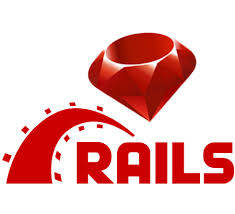

This page provides the list of few web frameworks that can be used for a web application development.

Django framework can be used for the web application development. The main website for Django can be found here Django is a Model-View-Template framework and it uses Python language for web development. Its key features include authentication and messaging. Django has support to provide security for the web applications.
 Ruby on Rails framework can be used for the web application development. The main website for Rails can be found here Rails is a Model-View-Controller framework and it uses Ruby language for web development. Popular users of Ruby on Rails are: Airbnb, GitHub, Hulu, and Shopify. It is famous as a beginner friendly framework for web application development that uses gems for handling dependencies.
 Laravel framework can be used for the web application development. The main website for Larvel can be found here
Laravel is a Model-View-Controller framework and it uses PHP language for web development. Laravel lacks in performance over Django or Express.
Laravel framework can be used for the web application development. The main website for Larvel can be found here
Laravel is a Model-View-Controller framework and it uses PHP language for web development. Laravel lacks in performance over Django or Express.